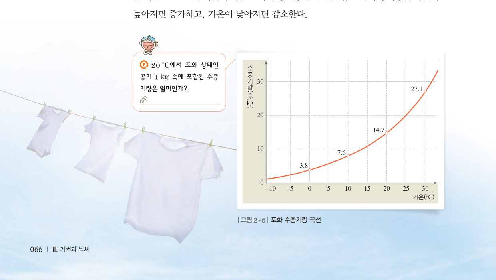
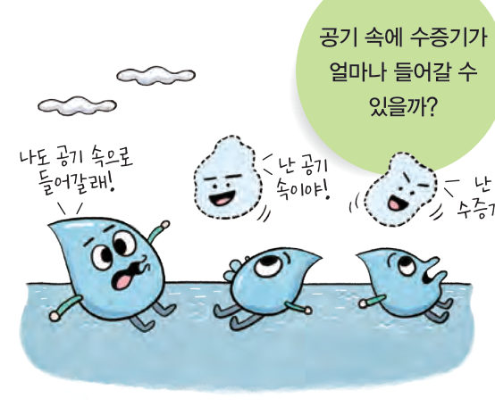
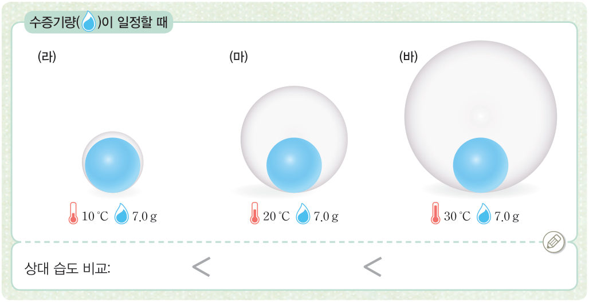

공기 속에 숨은
수증기
공기 속에 수증기가 얼마나 들어갈 수 있을까? 포화 수증기량 곡선 위에서 기온과 수증기량을 직접 바꿔 상대 습도와 이슬점을 확인하고, 맑은 날 하루 동안 기온과 상대 습도가 어떻게 반대로 변하는지 살펴보자.

점심을 먹고 친구와 운동장에서 하늘에 예쁘게 떠 있는 구름을 보며 즐겁게 이야기를 나누었어. 그런데 수업을 마치고 나오는 길에 하늘을 보니 금방이라도 비가 올 것처럼 어두운 구름이 하늘을 가득 메우고 있는 거야. 집에 도착하자마자 비가 쏟아졌어. 구름에서 비는 어떻게 만들어지는 걸까?
▶ 이미 배운 내용 | 이슬, 안개, 구름은 공기 중의 수증기가 응결하여 만들어진다.
🔑 첫 번째 열쇠 공기 중에 포함된 수증기의 양을 어떻게 나타내는지 확인한다. · 두 번째 열쇠 하늘에 떠 있는 구름이 어떻게 생기는지 알아본다. · 세 번째 열쇠 비가 내리려면 어떤 과정을 거쳐야 하는지 알아본다.
이 단원과 관련해 이미 알고 있는 것에 표시해 보자.
햇빛이 잘 비치는 날에는 젖은 빨래가 잘 마르고, 컵에 담아 둔 물은 줄어든다. 이는 물이 증발하여 대기 중의 수증기가 되었기 때문이다. 대기가 포함할 수 있는 수증기의 양은 기온에 따라 달라진다. 어떤 기온에서 일정한 양의 공기가 최대로 수증기를 포함하였을 때를 포화 상태라고 한다. 이때 포화 상태인 공기 1 kg에 들어 있는 수증기량을 g으로 나타낸 것을 포화 수증기량이라고 한다. 포화 수증기량은 기온이 높아지면 증가하고, 기온이 낮아지면 감소한다.
일상생활에서 주로 사용하는 습도는 상대 습도로, 현재 기온에서 공기의 포화 수증기량에 대한 실제 포함된 수증기량의 비율로 나타낸다.
상대 습도(%) = 현재 공기의 실제 수증기량(g/kg) ÷ 현재 기온의 포화 수증기량(g/kg) × 100
| 기온 20 ℃가 일정할 때 수증기량이 5.5 g → 8.5 g → 13.6 g으로 많아지면 상대 습도는 | |
| 수증기량 7.0 g이 일정할 때 기온이 10 ℃ → 20 ℃ → 30 ℃로 높아지면 상대 습도는 |
기온이 일정하면 포화 수증기량이 일정하므로 공기가 포함하고 있는 수증기의 양이 많아질수록 상대 습도가 높아진다. 반면, 기온이 변하면 포화 수증기량이 달라지므로 공기가 포함하고 있는 수증기의 양이 일정하여도 상대 습도가 달라진다. 기온이 낮아지면 포화 수증기량이 감소하여 상대 습도가 높아지고, 기온이 높아지면 포화 수증기량이 증가하여 상대 습도가 낮아진다.
비가 오면 맑은 날보다 공기 중에 수증기량이 많아져 상대 습도가 높다. 맑은 날에는 하루 동안 기온이 변하여 상대 습도는 계속 달라진다. 하루 동안에 대기 중의 수증기량은 크게 변하지 않으므로 기온과 상대 습도는 대체로 반대로 나타난다.
겨울철은 기온이 낮아 난방기를 많이 사용하므로 실내 공기의 습도가 매우 낮아진다. 습도가 낮으면 피부나 호흡기가 건조하여 건강을 해칠 수 있으므로 적정 습도(약 40 %~60 %)를 유지하는 것이 매우 중요하다. 가습기는 초음파로 물을 진동시켜 잘게 쪼갠 물방울을 내뿜거나, 전기로 물을 끓여 수증기를 내보낸다. 또, 물을 적신 매체에 바람을 쐬어 증발시켜 수증기를 만들어 내기도 한다.
| ⑴ 일정한 양의 공기가 포함할 수 있는 수증기의 양에는 한계가 있다. | |
| ⑵ 기온이 높을수록 포화 수증기량이 감소한다. | |
| ⑶ 수증기량이 일정할 때 기온이 충분히 낮아지면 포화 상태에 도달한다. |
⑵ A~D 공기의 상대 습도 비교:

1공기 중의 수증기
⑵ : 공기의 포화 수증기량에 대한 실제 수증기량의 비율로, 기온과 수증기량에 따라 달라진다.
⑶ 하루 동안 기온과 상대 습도는 대체로 나타난다.
| 평가 기준 | 스스로 평가 |
|---|---|
| 상대 습도를 알고, 기온에 따른 상대 습도의 변화를 설명할 수 있다. | |
| 포화 수증기량 곡선을 해석할 수 있다. |